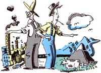

LAST LAUGH
"A certain intelligence governs our universe, except in certain parts of New Jersey." - Woody Allen
Well sir, as I'm sure you recall (from issue 106), the rambling rail riders from Plumtree Crossing got themselves cold-roasted by the sophisticated, high-talking denizens of Boston. So much so that when they realized the train they'd hopped on was headed to New York City, they decided they just plain wouldn't get off. Instead they huddled for six hours, unwilling to budge from their seats, while the train sat motionless in the dark innards of Grand Central Station.
Finally, the engine pulled out, headed for-well, they didn't rightly know where it was headed for. That is, they were in the dark until a wild-haired gang of teenagers got on, wearing T-shirts that said things like "Don't you hate it when you wake up and your shirt smells like New Jersey?" and "New Jersey: Landfill of Opportunity."
Turned out, though, those young fellers were right friendly. In fact, when they heard the Plumtree Perambulators were looking for humorous tales about America, they practically fell over each other in their efforts to be helpful.
"Noo Joisy's funny," one said. "Ya know, brudda, like it's cawled da Garbage State insted of da Garden State."
"Yeh," another broke in. "Finstins, wha's Noo Joisy's biggest contribution to culcha? Pizza by da slice."
"An how cum allduh kids in Joisy take vocation class-cawsa den dey'll know wha jobs dey'll be outta."
"Uf caws, while youse guys is heah, I want ya shud go see da Mafia Memorial Cemetery-da Newark gahbage dump!"
The next thing the Plumtree Crossing Cruisers knew, the train had stopped at Secaucus and those kids were piling out, loudly yodeling a ballad in honor of their home state: "In Hoboken dere will be/Trash as faw as de eye can see./Garbage fuh you and garbage fuh me/In da garbage dumps of Noo Joisy." Even as they went out of sight, they were still singing: "When Oi die, please boiwy me low,/Wheh Oi can heah da petroleum flow./A sweeda sound Oi nevah did know/Dan dose rolling mills of Noo Joisy."
After the noice (I mean, noise ) died down,
Ott Bartlett spoke up-for the first time since the train had left New York. "Boys, let's not get off just yet." They didn't, either. They stayed on past Hoboken, Jersey City, Bayonne, Perth Amboy-past ghetto, skyscraper, refinery, barge. Eventually, though, the countryside changed. Trees replaced smokestacks. Sky beat back smog. Cows outnumbered cars.
Finally, the crew of somewhat surprised travelers got off at a little whistle stop called No Man's Reach-and found a country burg as pretty as bees in corn silk. The boys walked down to a local diner, ordered some specials that turned out to contain pleasingly down-home grub, and dug in like hogs on Sunday. Newt Blanchard was so perplexed by the sudden change that he grabbed hold of the first gent that walked by-fella by the name of James McLean, it turned out-to get an explanation. Jim kindly pulled up a chair and began to talk.
"So you boys are trying to learn about Jersey? A lot of folks think New Jersey is nothing but dumps, gangsters and turnpikes. I once overheard a young man talking to a pretty lady in a bar. When he said, 'I'm from New Jersey,' she replied, 'Oh, really? Which exit?'
"But that, you see, is North Jersey. South Jersey's a whole different state. North Jersey gave us our state flower: the beer can. South Jersey's got a more rural heritage. We're home of the state bird: the mosquito. Fact is, folks round here always build their porch posts six feet apart-just to keep the mosquitoes out.
"Most of the locals here don't really mind mosquitoes. They say the bugs don't sting anymore-they just reuse the holes they've already bored. A lot of the old-timers don't even have screens on their doors. That's cause they're particular-they don't like breathing all that strained air.
"Air-now there's a difference between the two Jerseys. I knew a fellow once had to go to school up in North Jersey. He couldn't stomach all the polluted stench, so his folks mailed him an inflated car tire. Whenever that North Jersey smog got to be too much, he'd take a whiff out of that tire and revive himself.
"Most people don't know South Jersey exists-because they never get off the Turnpike. My dad still remembers the first highway they put in this half of the state. He was a little boy helping Granddad move cattle one day, when all of a sudden Granddad-who was up ahead quite a ways-started yelling, 'Come here! Come here quick!' Well, Dad switched the cow he was herding hard as he could, but Granddad just kept yelling. Dad pushed and pushed and pushed that cow. Finally he reached the top of the hill where Granddad was standing. The old man smacked him right on the shoulder. 'Darn it, you were too slow! A car just went by. Now you'll never get a chance to see one!' "
Editor's Note: Do you have a distinctive bit of regional American humor you think the Plumtree boys should hear on their travels? If so, send it to Last Laugh, Mother Earth News, P.0. Box 70, Hendersonville, NC 28793. We'll pay $10 for any joke we publish (that the fellas didn't know already!).
|
 |
|
|
|
|
|
|
|
|
|
|
|
|
|
|